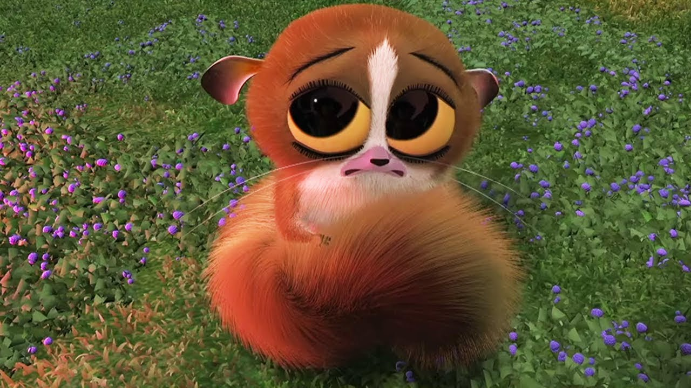

Mort es un pequeño, adorable, inocente y a veces es un irritante lémur ratón, uno de los súbditos del Rey Julien. Junto con Julien y Maurice, es un personaje secundario en las películas de la saga y personaje principal de Los Pingüinos de Madagascar. A diferencia de Maurice, Mort adora ciegamente a Julien y está obsesionado con sus piesMort es muy amistoso, juguetón y despreocupado. A veces es tímido. Está en cierto grado consiente de que es pequeño y adorable por lo que trata de ser adorable para los demás. Por su inocencia y voz aguda suele ser irritante aunque tambiés es muy obediente y por tanto fácil de engañar. Tambiés es fácil de controlar por aquellos más grandes que él (como se ve en El Nuevo Rey) y se asusta fácilmente ante el peligro (cuando logra verlo) y cosas tenebrosas como fantasmas y monstruos.
Aunque Mort es odiado y rechazado por el Rey Julien, no parece importarle, probablemente porque no lo considere como algo personal (dado que Julien odia que cualquiera toque sus pies). Según en La Verdad Duele, sólo le gusta Julien por sus pies, aunque en otros episodios (como en Un Rey sin Reino) se ha visto que realmente le importa el Rey Julien. Es muy celoso con respecto a su rey, como se ve en Imita Lémures, El Mano Derecha y Operación: Intercambio de Vecinos.
Mort tambiés es un tanto sensible y se pone triste cuando es rechazado o le es negado algo por parte de los demás animales. Aunque puede soportar el menosprecio de Julien y ser pateado constantemente, ser expulsado del "reino" en Con los Pies en la Tierra y Un Rey sin Reino para él es horrible. En Super Mort, después que Julien se niega a compartir su botín, Mort se vuelve agresivo gracias a los efectos del rayo de Kowalski en lugar de sólo gimotear como usualmente lo hace. En El Amigo de la Caja, Mort consigue un videojuego con un personaje llamado Okkuu (del cual ni siquiera los pies del Rey Julien roban su atención) y llora desconsoladamente cuando no puede encontrarlo.
La persona que más quiere después de Julien es Maurice.
